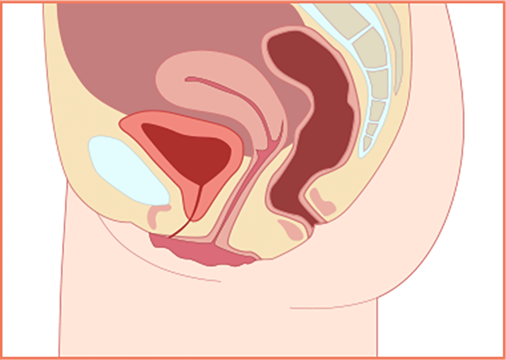
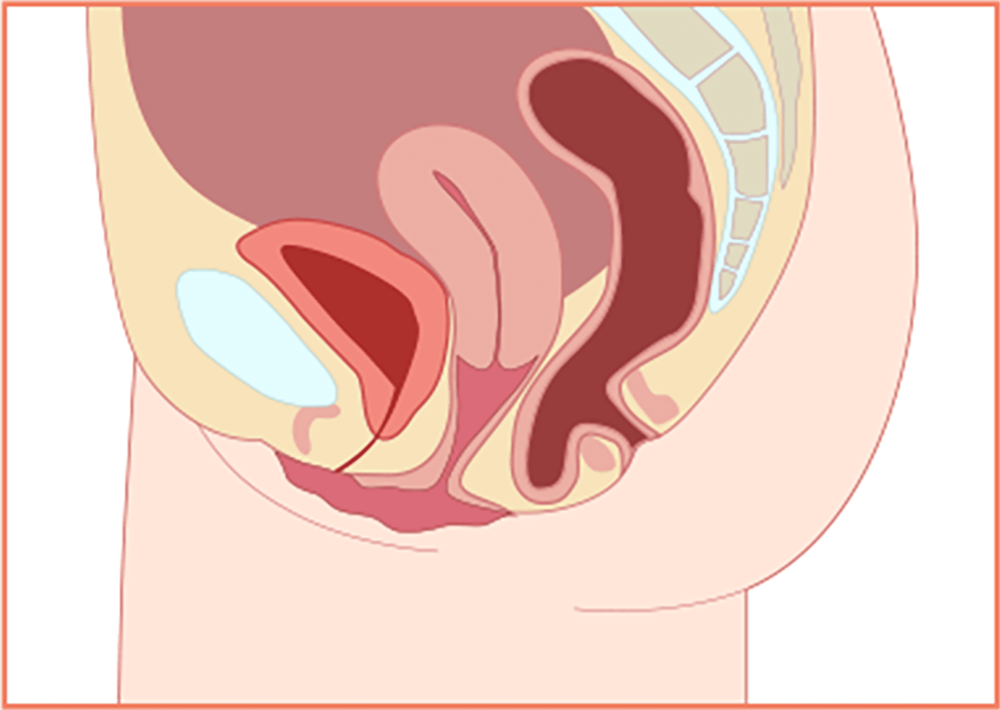
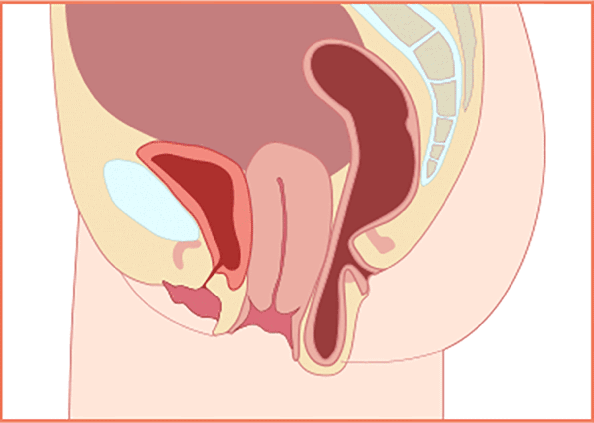
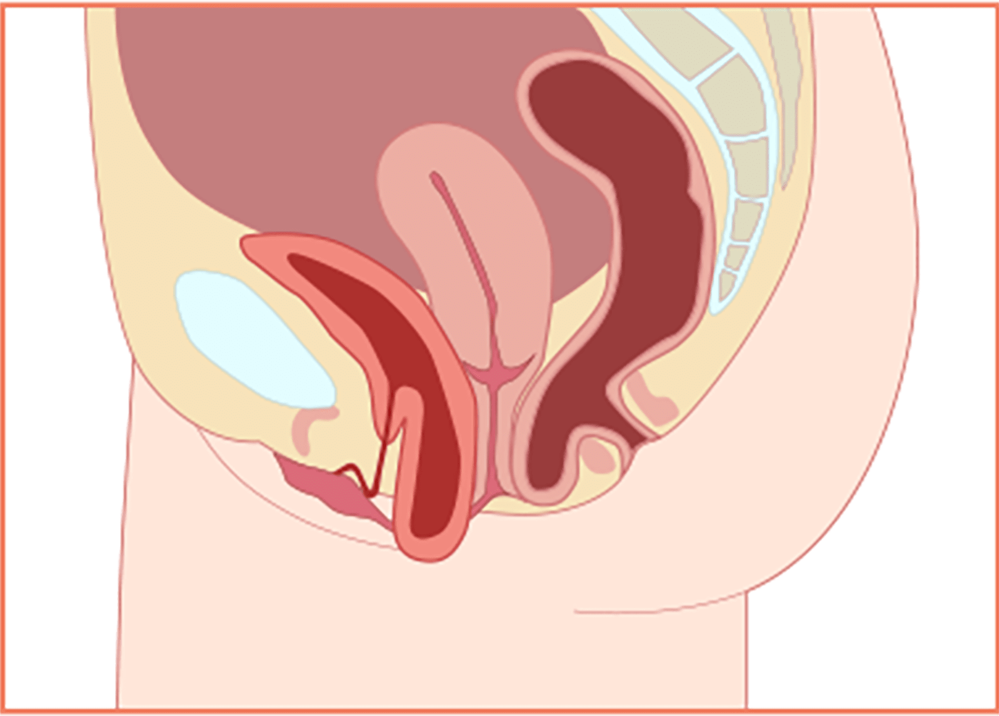
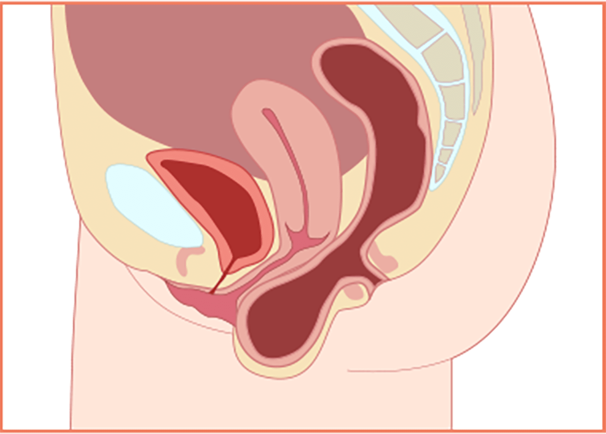
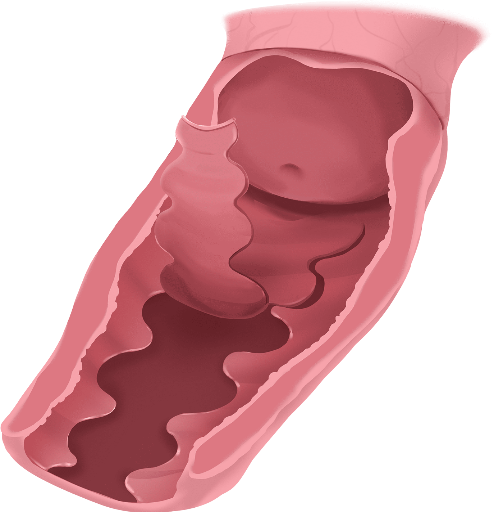
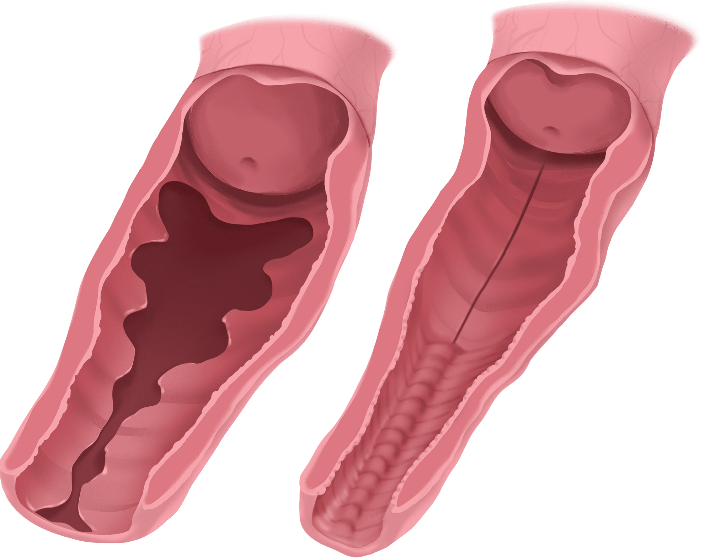
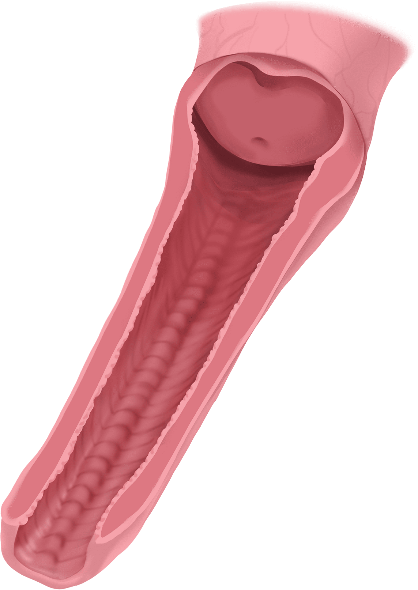
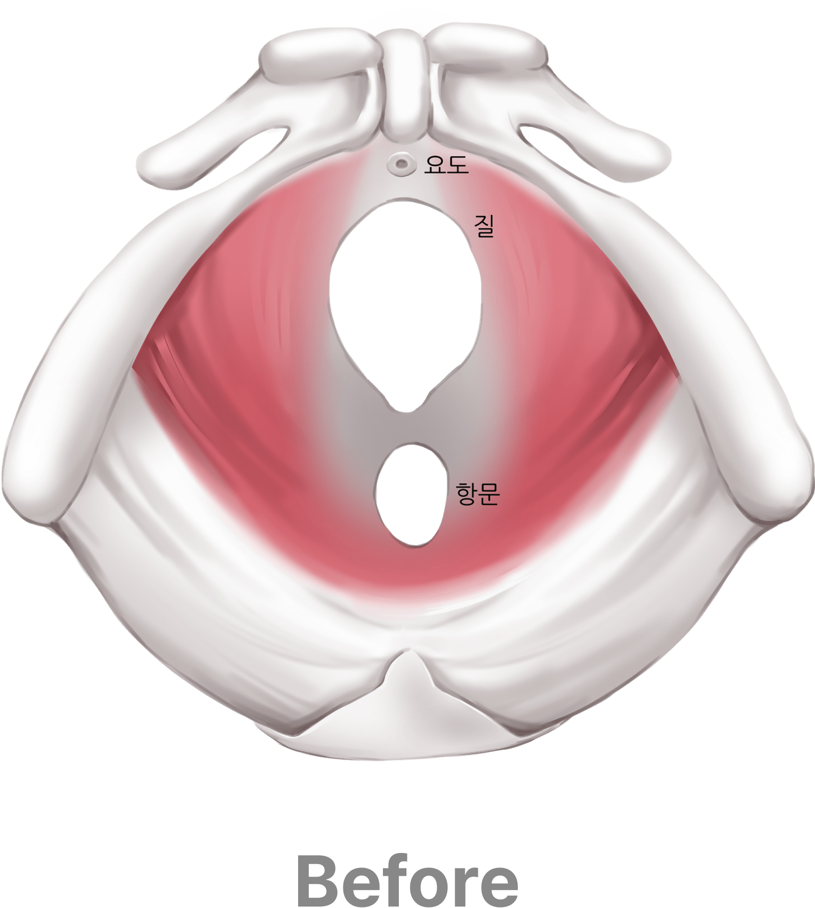
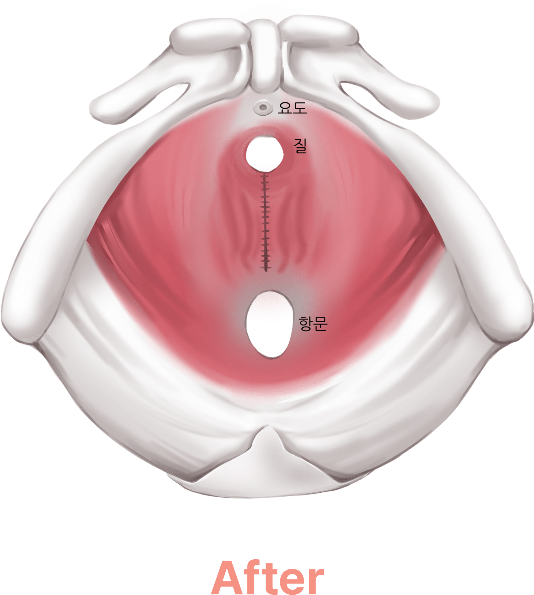

나를 위한
자궁하수 or 밑빠짐 현상
자궁탈출증은 자궁이 정상적인 위치에서 아래쪽으로
이동하여 일부분 또는 전체가 질을 통해서 빠져나오는 증상입니다
자궁은 인대에 의해서 지지되고 있는 골반 하벽에 위치한 장기입니다
나이가 들면서 인대 근육이 노화됨에 따라 인대가 자궁을 지지하는
힘이
약해지게 되는 이유로 자궁이 질 밖으로 내려오는 현상이
발생합니다
우리나라 50세 이상 여성의 절반 이상이 갖고 있을
정도의 흔한 증상이며,
일상생활에 큰 불편함이 느껴지고 돌출된
부분이 쓸리게 되어 감염, 염증 등의 위험성이 있습니다
골반장기 탈출증의
진행과정
정도에 따라 질 입구 쪽으로 밀려 나가며 질점막이 얇아지고
자궁경부 근처 질 내부가 넓어지는 현상도 발생합니다
-
정상자궁 자궁경부의 하단부가

질강 안쪽 깊숙이 위치한 모습 -
1도 자궁경부의 하단부가

질강 내에 쳐져 있는 정도 -
2도 자궁이 질 밖으로 돌출된 상태로

평상시 음부에서 보이는정도
골반장기 탈출증의
종류
골반장기 탈출증은 탈출된 부위에 따라
다음과 같은 종류들이 있습니다.
이는 해부학적 분류에
의한 것이며 임상적으로 한 가지 형태보다는
여러 종류가 복합적으로 나타납니다.
-
질탈출 자궁하수 자궁이 정상 위치 밖으로 이동하여
자궁의 일부 혹은 전체가
질을 통해 빠져나오는 현상 -
방광류 질 전벽이 약해져서 방광이

질벽을 밀고 내려와
질 밖으로 돌출되는 현상 -
직장류 질 후벽이 약해져서

직장의 앞쪽 벽이 질 쪽으로
팽창, 돌출되는 현상
골반장기 탈출증
발생 원인
-
유전적 요인
골반장기 탈출증이 있는
가족력이
있는 경우 골반장기
탈출증이
발생할 확률이
30% 이상에 달합니다. -
임신 및 출산
임신과 출산으로 골반 구조물을
지지하는 골반 인대, 근막,
근육 등의 손상,
늘어남으로
나타날 수 있습니다. -
비만
비만, 고도비만, 복부비만 등의 경우
골반장기 탈출증의 위험이 높습니다. -
천식 및 만성변비
장기간 천식이나 만성 변비가
있는 경우 복압을 상승시켜
골반장기
탈출증의
요인이 될 수 있습니다.
교정 솔루션
비비브 1.0 & 2.0

 비비브
비비브
비비드는 피부 리프팅 레이저 장비로 잘 알려진
써마지 기술로 만들어진 질 이완증 치료 장비입니다.
열에너지를 이용해 질 내부 콜라겐 생성을 촉진시켜
단 1회만으로도 질 벽의 쿠션감을 생성
하고
늘어진 근육을 당겨줍니다.
또한 클리토리스와 바로 연결되어 있는질 안쪽 입구
조직에
시술하여 원활한 혈액 순환을 촉진하고
클리토리스를 자극해 마찰감을 향상하고 전 세계에서
성감 증대 효과를 인정받고 있는 시술
입니다.
-
단 1번의 시술로
강력한 질 타이트닝 비비브 시술은 단 1회
30분 정도의 짧은 시술로도
만족스러운 효과를 경험할 수 있습니다. -
흉터 및 통증 최소화
비비브 시술은 비수술, 비절개 시술로
출혈과 통증이 적어
마취나
약물 복용 없이 시술로 가능합니다. -
안전한 시술
부작용이 거의 없는 시술로
풍부한 경험과 노하우의
산부인과
전문의 여의사가 시술합니다. -
빠른 회복
시술 후 바로 일상생활이
가능합니다.
질쎄라


인체에 무해한 집속 초음파(HIFU) 에너지를 조직 내에 조사하여
집중된 에너지 피부 표면을
거의 손상시키지 않고 적정 깊이로
초음파 에너지를 전달하여 콜라겐 합성을 촉진
하여
섬유 근육층의 수축을 발생시켜 질 내부가 타이트닝 되며
두꺼워지도록 도와줍니다.
질 점막 탄력성도 증가시키는 효과
를 얻을 수 있습니다.

-
절개 없이 레이저로 시술하여
출혈과 흉터가 적고 통증이 적음 -
회복을 위한 시간이 필요하지 않아
바로 일상생활 가능 -
섬세한 타겟팅 설정으로
질벽을 더욱 튼튼하고 두껍게 -
다른 시술과 복합 시술로
시너지 효과
모나리자 터치
모나리자 터치란?

비 수술적 방식으로 질 성형과 요실금 개선을 한 번에
해결해 주는 신개념 레이저입니다. 질 점막의 회춘을 위한
DEKA 사만의 특수한 펄스(D-PULSE)를 이용해 기저층을
자극하여
이완된 질 점막을 탄력 있고 두껍게 좁혀주고
요실금 치료 및 질 내 환경을 개선
해 줍니다.
- 요실금
- 건조증
- 화이트닝
- 타이트닝
-
SAFETY
뛰어난 안정성
(유럽 CE, KFDA 정식 허가)
- PAINLESS 무마취, 무통증
-
FASTNESS
10~15분 시술 완료
시술 후 바로 일상생활 가능 -
EFFECTIVENESS
1회 시술 만으로
확실한 효과
질 내부 깊은 곳부터 시작되는 IN 포인트 3부위에 부위당
5cc 이상의 대용량 필러를 주입하여, 질 용적을 획기적으로
줄여주고 질 입구 쪽 OUT 포인트 5부위에 부위당 1~2cc의 필러를
주입하여 총 20cc이상의 필러로 든든하게 조여주고 받쳐줍니다.
-
Before
시술 전 질 내부

-
After
시술 후 채워진 질 내부

-
시술 전 질 단면도

-
시술 후 채워진 질 단면도

나를위한에서는 과학적인 질압 측정을 통해 환자분에게
가장 이상적인
볼륨감을 디자인하고,
최적의 필러 용량을 제안 드리고 있습니다.
나를위한이 사용하는 필러는
안전성
을 인증받은
전용 콜라겐 필러와 HA 필러이며
정품/정량 사용의 원칙
을 준수하고 있습니다.
비절개 시술로 통증을 최소화하고, 바로 일상생활이 가능한
간단한 시술이지만,
확실한 질 축소 효과
를 보실 수 있습니다
질 내부의 폭을 좁혀 손상된 질 주변
골반 바닥 근육을 복원시켜주는 수술로
필러의 주입이나 임플란트 수술 없이
질 축소와 함께 골반근육강화, 돌기 생성
까지 한 번에 하는
나를위한만의 올인원 질 축소술 입니다.
성감 향상은 물론이며, 요실금 치료,
골반통, 변비, 체형교정에도 효과가 있고
추후 자궁탈출과 같은 질환을 예방하는데 효과가 있습니다.
-

점막 박리술 -

돌기생성술 올인원 질 축소술 -

골반근육강화술
-

-

질 이완 진단기
를 통한
질압측정

나를위한 산부인과에서는 비비브 질타이트닝,
질 축소술, 질 필러 시술 등에 질압측정을 통한
비교 데이터를 제공해 드리고 있습니다.

프라이빗한 휴식 과 회복
나를위한산부인과에서는 치료를 받는
환자분들이
긴장을 완화하고 편안한
마음으로 쉬실 수 있도록
고급스럽고
편안한 분위기의 1인 회복실을 제공합니다.